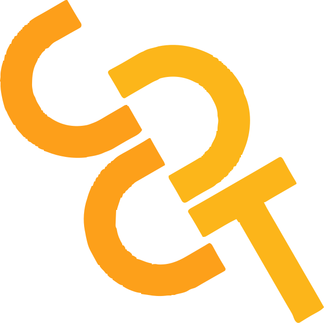
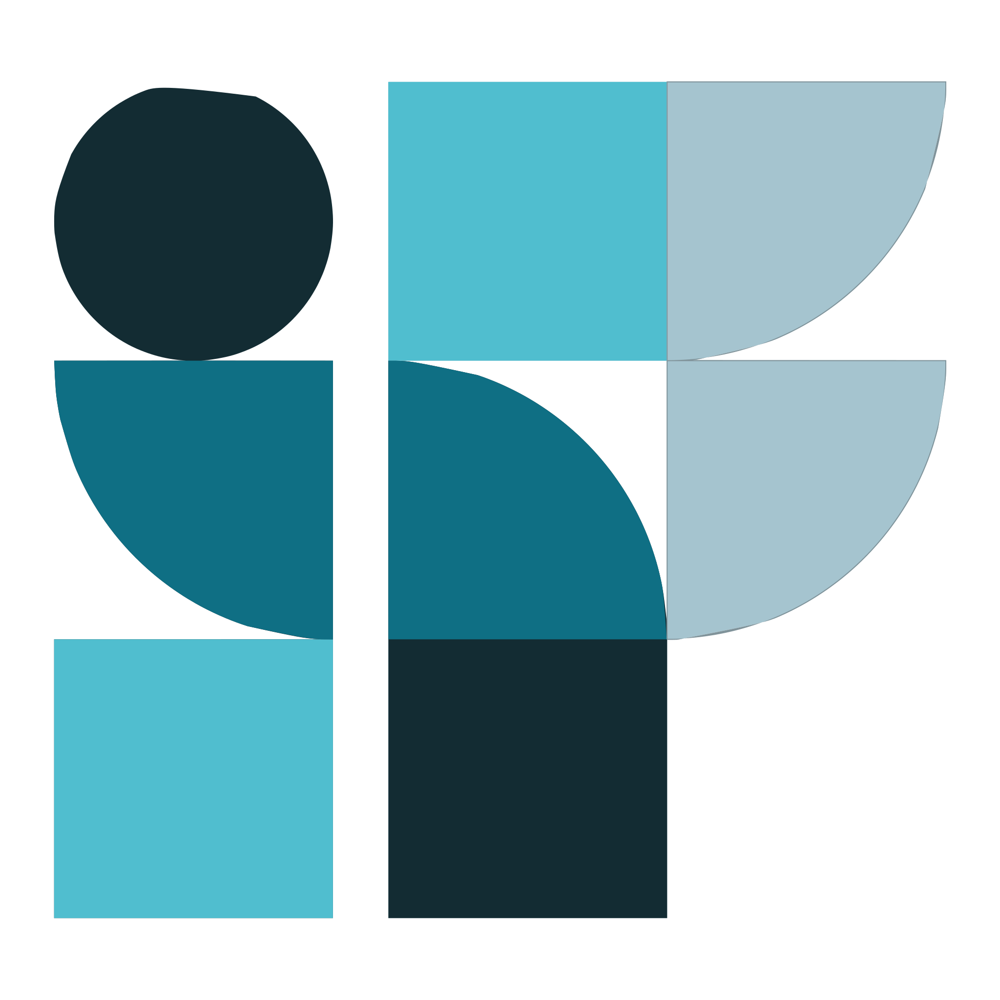

Program Kerja UKM Computer Club
Ada 3 Proker di UKM Computer Club

CCDT
Program Kerja yang berfokus pada pelatihan dan lomba untuk anggota UKM Computer Club. Tujuan dari proker ccdt adalah mengharapkan anggota dapat menguasai setiap materi yang diberikan baik itu dari fungsionaris atau dari pembicara luar.
Eagles
Program Kerja yang berfokus pada turnamen game dan seminar. Tujuan dari proker eagles adalah untuk menawarkan tempat kepada anggota dalam menguasai perlombaan atau tournamen dibidang game serta mendapatkan pengalaman seputaran dunia game.

IntectFest
Program Kerja yang berfokus pada perlombaan dan seminar seputaran IT. Proker ini memiliki 3 lomba-lomba yang seru, diantaranya : lomba WDC, DC, dan CTF
Fungsionaris UKM Computer Club
Ada 20 orang yang bergabung menjadi fungsionaris di UKM Computer Club